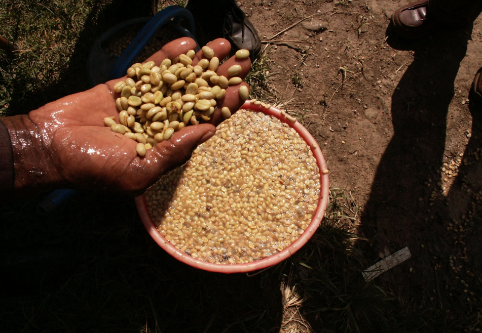
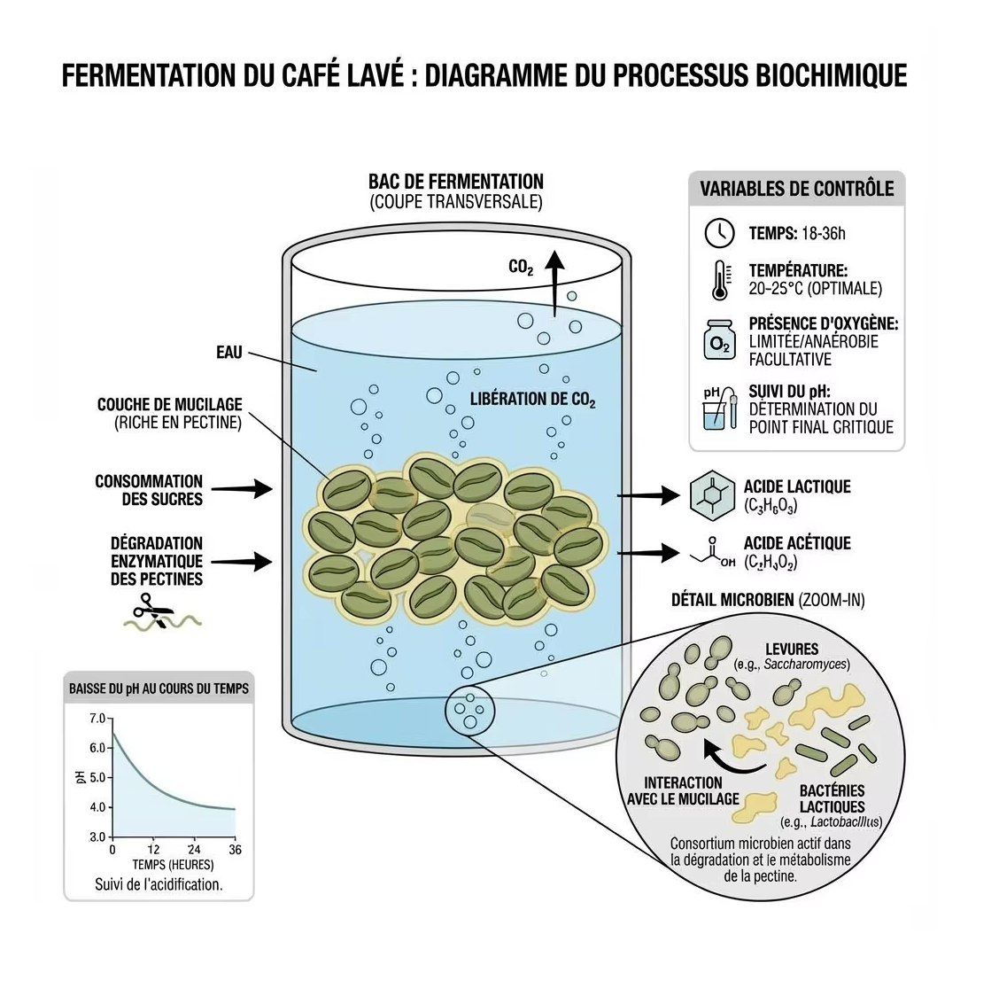

En un coup d'œil :
Le process de la pureté. On fermente le mucilage pour le dissoudre, on lave à grande eau, on sèche proprement. Résultat : une tasse cristalline qui révèle le terroir et la variété sans masque. C'est la référence pour juger la qualité intrinsèque d'un ca

Comprendre : La philosophie du lavé
Pourquoi laver le café ?
Quand on récolte une cerise de café, le grain (la graine) est entouré de plusieurs couches :
Peau (exocarpe)
↓
Pulpe (mésocarpe) ← sucrée, charnue
↓
Mucilage (couche pectique) ← ultra-collant, 40% sucres
↓
Parche (endocarpe) ← enveloppe protectrice
↓
Pellicule argentée (tégument)
↓
GRAIN (endosperme) ← ce qu'on va torréfier
Le problème : Le mucilage est tellement collant qu'on ne peut pas simplement le "frotter" pour l'enlever.
La solution lavée : On utilise l'eau et la fermentation pour le dissoudre chimiquement, puis on le rince.
Résultat : Un grain "propre" qui n'a gardé que les arômes intrinsèques de son terroir, de sa variété et de sa maturation.
Lavé vs Natural vs Honey : La différence fondamentale
| Process | Ce qu'on garde pendant le séchage | Profil typique |
|---|---|---|
| Washed | Parche nu (mucilage retiré) | Clarté, acidité, précision |
| Honey | Parche + 25–100% mucilage | Douceur, fruité contrôlé, corps |
| Natural | Cerise entière (peau + pulpe + mucilage) | Sucrosité, fruité explosif, corps dense |
| Pulped Natural | Parche + 50–70% mucilage | Caramel, noisette, rondeur |
L'équation simple :
Plus on enlève de matière externe = Plus la tasse est "propre" et "claire"
Plus on garde de matière externe = Plus la tasse est "sucrée" et "complexe"
Le lavé pousse le curseur au maximum vers la transparence.
Ce que révèle un café lavé
Un café lavé bien exécuté agit comme un révélateur photographique :
✅ Le terroir : altitude, sol, climat → acidité, minéralité
✅ La variété : génétique → profil aromatique (floral, fruité, chocolaté)
✅ La maturité : °Brix de la cerise → sucrosité et équilibre
✅ La santé du lot : défauts de récolte/tri → immédiatement visibles
C'est pourquoi :
•Les compétitions privilégient les lavés (clarté du cupping)
•Les acheteurs jugent la qualité sur des lavés (moins de "masque" fermentaire)
•Les prix records sont souvent sur des lavés ou Geisha naturels (transparence extrême)
Maîtriser : Les étapes du process lavé
Phase 1 : Récolte et tri initial
Objectif : Cerises mûres uniquement (≥18 °Brix idéalement 20–22)
Méthode :
•Récolte sélective : cueillette manuelle des cerises rouges/jaunes mûres
•Flottaison immédiate : tri par densité dans l'eau
•Flottants = immatures, vides, abîmés → écartés
•Coulants = denses, mûrs → conservés
•Lavage préliminaire : retrait poussières, feuilles, débris
Composition chimique d'une cerise mûre :
•°Brix : 18–24 (idéal 20–22)
•pH : 5,5–6,0
•Sucres : 12–18% (glucose, fructose, saccharose)
•Acides : citrique (60%), malique (30%), autres (10%)
⚠️ Point critique : La qualité du lavé est définie à 70% par la qualité de la cerise. Contrairement au natural, on ne peut pas "masquer" les défauts de maturité.
Phase 2 : Dépulpage
Objectif : Séparer la peau + pulpe du grain en parche (encore entouré de mucilage)
Machines utilisées :
•Dépulpeuse à disque (petits producteurs)
•Dépulpeuse à tambour (volume moyen)
•Ecomill / Penagos (technologies économes en eau)
Réglages critiques :
| Paramètre | Valeur optimale | Impact si mauvais |
|---|---|---|
| Pression cylindre | Modérée | Trop fort → parche fissuré ; trop faible → pulpe résiduelle |
| Écartement | Selon taille grain | Inadapté → grains coincés ou mal dépulpés |
| Débit d'eau | 1–2 L/kg cerises | Excès → gaspillage ; insuffisant → bourrage |
Résultat : Grains en parche recouverts d'une couche épaisse de mucilage (2–3 mm) ultra-collant.
Phase 3 : Fermentation en cuve — Le cœur du process lavé

Objectif : Dissoudre chimiquement le mucilage par l'action d'enzymes et de micro-organismes
Mise en cuve
Deux méthodes principales :
•Fermentation sèche (dry fermentation)
•Grains en parche sans ajout d'eau supplémentaire
•Fermentation plus concentrée, pH descend plus vite
•Profil final : acidité plus vive, notes fruitées plus marquées
•Fermentation humide (wet fermentation)
•Grains immergés dans l'eau (recouverts de 5–10 cm)
•Fermentation plus douce, homogène
•Profil final : acidité plus ronde, notes florales
Durée typique : 8–36 heures (selon température et altitude)
Que se passe-t-il pendant la fermentation ?
Acteurs biologiques :
| Micro-organisme | Rôle | Métabolites |
|---|---|---|
| Levures (Saccharomyces, Pichia, Candida) | Dégradent les sucres | Éthanol, CO₂, esters légers |
| Bactéries lactiques (Lactobacillus, Leuconostoc) | Produisent acide lactique | Acide lactique, diacétyle (traces) |
| Bactéries acétiques (Acetobacter) | Oxydent l'éthanol | Acide acétique (à limiter) |
| Enzymes pectinases | Cassent les pectines | Dégradation du mucilage |
Évolution des paramètres :
| Temps | pH | °Brix mucilage | Viscosité | Notes olfactives |
|---|---|---|---|---|
| T0 | 5,5–6,0 | 14–20 | Très épaisse | Sucré, fruité doux |
| 8h | 5,0–5,5 | 10–14 | Épaisse | Fruité fermenté léger |
| 16h | 4,6–5,0 | 6–10 | Moyenne | Alcoolisé doux, floral |
| 24h | 4,4–4,8 | 2–5 | Fluide | Propre, léger vinaigre si dérive |
| 36h+ | <4,4 | <2 | Liquide | ⚠️ Risque sour (acétique dominant) |
Point de fin optimal :
•pH : 4,4–4,8
•Mucilage se détache facilement au frottement (test main)
•Eau de lavage claire après rinçage
•Pas d'odeur vineuse ou piquante
Variables critiques à contrôler
1. Température
| T° ambiante | Durée fermentation | Risque |
|---|---|---|
| 15–18°C | 24–36h | Fermentation lente mais propre |
| 18–24°C | 12–24h | Zone idéale |
| 24–30°C | 8–16h | Risque dérive acétique |
| >30°C | <12h | ⚠️ Fermentation explosive, sour |
2. Homogénéité (brassage)
Si fermentation humide : brasser 2–3× par jour pour :
•Homogénéiser la température
•Éviter stratification (levures en surface, bactéries au fond)
•Distribuer l'oxygène (limite l'acétique en excès)
3. Oxygène disponible
| Condition | Dominance microbienne | Profil résultant |
|---|---|---|
| Aéré (brassé, cuve ouverte) | Levures + LAB équilibrés | Propre, floral, fruité léger |
| Anaérobie (cuve fermée, pas de brassage) | Bactéries anaérobies | Risque acétique/butyrique (sour) |
En lavé classique, on veut un milieu AÉRÉ (contrairement aux fermentations expérimentales).
Phase 4 : Lavage mécanique
Objectif : Stopper la fermentation + retirer physiquement les résidus de mucilage
Méthodes :
•Canaux de lavage (washing channels)
•Grains brassés à l'eau courante (5–10 min)
•Séparation par densité : grains lourds coulent, légers flottent (nouveau tri)
•Tables de frottement (demucilaging tables)
•Grains agités mécaniquement dans l'eau
•Friction douce pour détacher mucilage résiduel
•Machines à laver (washing machines)
•Tambours rotatifs avec jets d'eau
•Plus rapide, plus régulier
Consommation d'eau :
•Méthode traditionnelle : 50–150 L/kg café vert produit
•Méthodes modernes (Penagos, Ecomill) : 1–5 L/kg
Contrôle qualité post-lavage :
•Grains doivent être lisses au toucher (pas collants)
•Eau de rinçage finale claire (pas trouble)
•Pas d'odeur fermentée résiduelle
Phase 5 : Trempage (optionnel mais recommandé)
Durée : 8–24 heures dans eau propre et froide
Objectifs :
•Affiner l'acidité : l'eau extrait certains acides organiques en excès → acidité plus douce
•Homogénéiser l'humidité : les grains absorbent de l'eau uniformément → séchage plus régulier
•Dernière purge : élimination des dernières traces de sucres fermentescibles
Variables :
•Eau renouvelée toutes les 8–12h (évite re-contamination)
•Température idéale : 15–20°C
•pH eau : neutre (6,5–7,5)
Impact en tasse :
•Avec trempage : acidité ronde, texture soyeuse
•Sans trempage : acidité vive, texture nette
Phase 6 : Séchage — La phase finale décisive
Objectif : Réduire l'humidité de ~55% à 10–12% sans dégrader les arômes
Méthodes de séchage
1. Séchage solaire (patios ou lits africains)
| Support | Avantages | Inconvénients |
|---|---|---|
| Patios béton/carrelage | Grande surface, faible coût | Chaleur excessive (>45°C) si soleil direct |
| Lits africains | Ventilation 360°, T° contrôlée | Surface limitée, coût plus élevé |
| Tables suspendues | Excellente aération | Très coûteux en espace |
Paramètres optimaux :
•Épaisseur couche : 2–3 cm
•Retournement : 4–6×/jour (J1–J3), puis 2–3×/jour
•Durée totale : 10–18 jours selon climat
•Protection nuit : couverture (contre rosée)
2. Séchage mécanique (guardiolas, séchoirs rotatifs)
| Type | T° | Durée | Usage |
|---|---|---|---|
| Séchoir statique | 35–40°C | 24–48h | Finition après pré-séchage solaire |
| Séchoir rotatif | 40–45°C | 18–30h | Séchage complet (climat très humide) |
⚠️ Température critique : 40°C
Au-dessus de 40°C :
•Cuisson des précurseurs aromatiques → notes baked
•Caramélisation prématurée des sucres → goût cuit
•Dégradation des acides chlorogéniques → perte d'acidité
Courbe de séchage idéale
| Phase | Humidité | Vitesse séchage | Brassage |
|---|---|---|---|
| J1–3 | 55% → 40% | Rapide (ombre/soleil matin) | 6×/jour |
| J4–7 | 40% → 25% | Modérée | 4×/jour |
| J8–12 | 25% → 15% | Lente | 2×/jour |
| J13–18 | 15% → 10–12% | Très lente (ombre) | 1×/jour |
Objectif : Vitesse de déshydratation < 1,2% H₂O par jour (après J3)
Pourquoi ralentir en fin de séchage ?
•Évite fissures internes (case hardening)
•Permet migration homogène de l'eau du cœur vers l'extérieur
•Préserve les arômes volatils (esters, aldéhydes)
Contrôle final
Mesure de l'humidité :
•Hygromètre digital : 10–12% (+/- 0,5%)
•Activité de l'eau (a_w) : < 0,60
Test sensoriel :
•Grain cassant (pas caoutchouteux)
•Odeur propre (pas de moisi, pas d'aigre)
•Couleur vert/bleu uniforme
Phase 7 : Repos en parche et stockage
Durée minimale : 4–8 semaines avant décorticage
Pourquoi c'est indispensable :
| Semaine | Processus interne |
|---|---|
| 1–2 | Équilibrage humidité (cœur → extérieur) |
| 3–4 | Stabilisation enzymatique résiduelle |
| 5–8 | Maturation aromatique (profil "s'affine") |
Conditions de stockage :
•Sacs respirants (jute + GrainPro)
•T° : 15–20°C, stable
•HR : 50–60%
•Pas de contact direct avec le sol
•Empilage max 10 sacs
Comparaison sensorielle :
•Café vert frais (J+1 après décorticage) : herbacé, végétal, vert
•Café vert reposé (8 semaines) : floral, fruité, aromatique net
Approfondir : Chimie et profil aromatique
Molécules clés du café lavé
Le lavé se distingue par une dominance d'acides organiques nets et d'aldéhydes légers, avec peu de composés fermentaires lourds.
| Molécule | Famille | Arôme | Seuil (ppb) | Origine |
|---|---|---|---|---|
| Acide citrique | Acide organique | Agrume vif, citron | — | Naturel dans le grain |
| Acide malique | Acide organique | Pomme verte, fraîcheur | — | Naturel dans le grain |
| Phénylacétaldéhyde | Aldéhyde aromatique | Miel, floral | 1–5 | Maillard doux (torréfaction) |
| Acétaldéhyde | Aldéhyde | Pomme verte, croquant | 10–50 | Fermentation légère (traces) |
| Linalol | Terpène | Lavande, jasmin | 5–10 | Naturel (variétés florales) |
| Géraniol | Terpène | Rose, citronnelle | 5–10 | Fermentation douce |
| Éthyl-acétate | Ester | Fruit doux (traces) | 5–20 | Fermentation contrôlée |
Ce qui est faible ou absent :
•Furaneols (fraise, caramel) → présents surtout dans Natural/Honey
•Lactones lourdes (pêche, noix de coco) → formées avec le mucilage séché
•Acides gras volatils → signe de fermentation excessive (défaut)
Profil sensoriel comparé
| Attribut | Score typique | Notes caractéristiques |
|---|---|---|
| Acidité | ⭐⭐⭐⭐⭐ | Citrique, malique, phosphorique, vive |
| Sucrosité | ⭐⭐⭐ | Modérée (miel, sucre de canne) |
| Corps | ⭐⭐ | Léger à moyen, soyeux |
| Clarté | ⭐⭐⭐⭐⭐ | Transparence absolue |
| Complexité | ⭐⭐⭐⭐ | Arômes distincts, séparés |
Descripteurs typiques d'un excellent lavé :
•Floral : jasmin, fleur d'oranger, bergamote
•Fruité : agrumes (citron, pamplemousse), fruits à noyau (pêche blanche)
•Doux : miel, sucre de canne
•Épices : cardamome, gingembre (terroirs spécifiques)
•Texture : soyeuse, "juteuse", thé blanc
Terroir et variété : Ce que révèle un lavé
Impact de l'altitude :
| Altitude | Acidité | Notes typiques |
|---|---|---|
| 1000–1400m | Modérée | Chocolat, noisette, caramel |
| 1400–1700m | Vive | Agrumes, fruits jaunes |
| 1700–2100m | Très vive | Floral, bergamote, thé |
Impact variétal :
| Variété | Profil lavé typique |
|---|---|
| Typica | Floral, miel, complexité élégante |
| Bourbon | Sucré, caramel, acidité ronde |
| Geisha | Jasmin, bergamote, explosif |
| SL28/SL34 | Cassis, agrumes, phosphorique |
| Caturra | Vif, citronné, propre |
En pratique : Roast tips pour café lavé
Comportement du grain à la torréfaction
Structure cellulaire :
•Densité : élevée (peu de matière externe séchée)
•Porosité : faible à moyenne
•Transfert thermique : rapide et homogène
Composition :
•Sucres : moyens (12–15%)
•Acides chlorogéniques : élevés (6–8%)
•Lipides : standards (15–17%)
Conséquence : Les lavés réagissent vite à l'énergie, demandent un contrôle précis du ROR.
Profil recommandé (base Loring)
Charge : 190–195°C (plus basse que Honey/Natural)
↓
Phase Drying (jusqu'à ~150°C)
- Durée : 3,5–4,5 min
- ROR initial : 30–35°C/min → décélération douce
- Objectif : évaporer l'eau sans précipiter, préserver acidité
↓
Phase Yellowing (150–165°C)
- Crucial pour lavés : transformation acides chlorogéniques
- Maintenir ROR 15–18°C/min
↓
Phase Maillard (165–195°C)
- Durée : 25–30% du temps total (plus court que Honey)
- ROR : 12–16°C/min, contrôlé
- Objectif : développer douceur SANS étouffer l'acidité
↓
Premier Crack : vers 196–200°C
↓
Développement : 10–13% (court à moyen)
- ROR post-1C : ne JAMAIS dépasser 8°C/min
- Descente douce : 5–6°C/min idéal
↓
Drop : 200–204°C selon altitude/densité
Pourquoi ce profil préserve la clarté
Charge plus froide (190–195°C) :
•Entrée douce → préserve esters légers volatils
•Évite "choc thermique" qui créerait notes herbacées
ROR maîtrisé post-yellowing :
•Évite pic qui "brûle" les acides (perte de vivacité)
•Progression douce = transformation homogène des chlorogéniques
Maillard plus court (25–30%) :
•Développe juste assez de sucrosité pour équilibrer
•Trop long → masque l'acidité, profil devient plat
Développement court (10–13%) :
•Préserve les notes florales/fruitées
•Trop long (>15%) → boisé, perte de clarté
Drop rapide après 1C :
•Un lavé "traîne" facilement → risque baked
•Drop décisif = fraîcheur préservée
Erreurs fréquentes avec les lavés
| Erreur | Symptôme en tasse | Correction |
|---|---|---|
| Charge trop chaude (>200°C) | Herbacé, végétal, astringent | Baisser à 190–195°C |
| ROR trop élevé post-yellow (>20°C/min) | Acidité agressive, déséquilibrée | Modérer énergie, viser 15–18°C/min |
| Maillard trop long (>35%) | Plat, perte de vivacité, caramel lourd | Raccourcir Maillard à 25–30% |
| Développement trop long (>15%) | Boisé, sec, perte florale | Drop à 10–13% |
| ROR post-1C trop rapide (>8°C/min) | Acide, piquant, déséquilibré | Ralentir à 5–6°C/min |
Les risques et défauts du process lavé
Défauts liés au process
| Défaut | Cause | Molécules | Prévention |
|---|---|---|---|
| Sour | Fermentation trop longue (>36h) ou trop chaude | Acide acétique, butyrique | Contrôler pH, stopper à 4,4–4,8 |
| Overripe | Cerises surmûries à la récolte | Éthanol, acétate d'éthyle | Tri rigoureux |
| Musty | Séchage trop lent, stockage humide | 2-MIB, géosmine | Séchage <18j, GrainPro |
| Moldy | Humidité excessive pendant séchage | Géosmine, 1-octen-3-ol | Couches fines, bonne ventilation |
| Baggy | Stockage prolongé en sacs jute humides | Composés jute | Repos correct, GrainPro obligatoire |
| Stale | Café vert trop vieux | Hexanal, nonanal | Rotation stock, max 12 mois |
Défauts de fermentation spécifiques
Sous-fermentation (mucilage mal retiré) :
•Symptôme : grains encore collants après lavage
•Impact : notes végétales, astringence, manque de clarté
•Cause : fermentation <8h ou T° trop basse
Sur-fermentation (dépassement du point optimal) :
•Symptôme : pH <4,2, odeur vineuse/vinaigre
•Impact : acidité acétique, notes sour, déséquilibre
•Cause : fermentation >36h ou T° >28°C
Conclusion : Le lavé comme étalon de qualité
Le process lavé incarne une philosophie de transparence :
✅ Révèle le terroir : altitude, sol, climat → directement en tasse
✅ Expose la qualité : défauts impossibles à masquer
✅ Préserve l'acidité : vivacité, complexité, fraîcheur
✅ Référence de cupping : jugement objectif de la qualité intrinsèque
Pourquoi il reste dominant en spécialité :
| Avantage | Impact commercial |
|---|---|
| Profil clair et prévisible | Facilite l'achat et le blend |
| Excellente conservation | Stable 12–18 mois |
| Reconnaissance en compétition | Prix premium pour lots d'exception |
| Polyvalence torréfaction | Adapté filtre ET espresso |
Limites :
•Coût en eau élevé (problématique environnementale)
•Infrastructure nécessaire (bassins, canaux, machines)
•Temps de travail (surveillance fermentation)
•Profil moins "waouh" pour le grand public (vs Natural fruité)
Positionnement idéal :
Le lavé excelle dans :
•Spécialité haute gamme (>85 pts) : met en valeur terroir et variété
•Café filtre pur origine : clarté et complexité
•Compétitions : référence pour jugement objectif
•Lots expérimentaux (Geisha, variétés rares) : transparence maximale
Pour aller plus loin
Comparaison process :
•Chapitre Process → Honey : entre lavé et natural
•Chapitre Process → Natural : sucrosité maximale
•Chapitre Process → Pulped Natural : efficacité brésilienne
Défauts associés :
•Chapitre Défauts → Sour, Overripe, Musty, Moldy, Stale
Chimie aromatique :
•Chapitre 4 → Formation des aldéhydes et acides organiques
💡 Note de formation : Apprendre à cupper un café lavé est la base de toute formation sensorielle. C'est sur ce profil "nu" qu'on apprend à reconnaître les notes variétales, les défauts, et l'impact du terroir. Maîtriser le lavé, c'est avoir la grammaire du café avant d'en écrire la poésie.